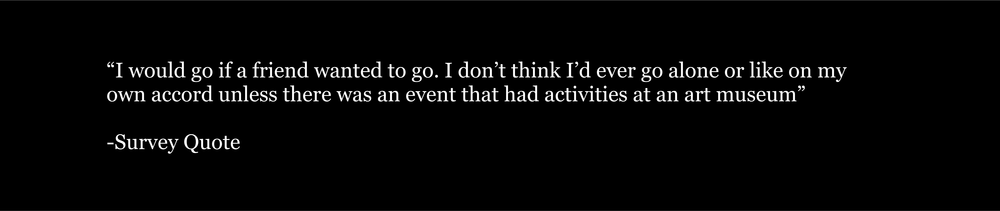

I created a high-fidelity prototype based on feedback from low-fidelity prototypes. The final product was created based on the last pieces of feedback from a target audience member, following testing of the high-fidelity prototype.
To attract ambivalent visitors to the MIA, I combined two concepts when creating a museum app. The first concept is to utilize a user’s horoscope to build a sense of familiarity and personalization with the app. The second concept is based on the exploratory research conducted during this project, which found that in-formalizing art spaces and creating room for companionship were effective in motivating non-art enthusiasts to visit the MIA. In combining these two concepts, I conceptualized an app that uses MIA's artwork on display to visualize a user’s daily horoscope and compare it with their friend's horoscope.
To identify the obstacles that prevent non-art enthusiasts from visiting art museums, I conducted exploratory and evaluative methods:
Exploratory: I conducted a survey and a day of contextual inquiry/usage of ethnographic methods, where I invited seven Ph.D. chemists who do not visit the museum daily to the Minneapolis Institute of Art. I also reviewed academic articles that explore obstacles to museum engagement and how art museums attract visitors. This research found that making art less formal and more social led to increased motivation to visit museums.
Evaluative: I created low-fidelity prototypes based on the qualitative data received from the exploratory phase. The app's basic design and functions were reviewed by a User Experience Design Professor and classmates, in the form of low-fidelity prototypes.
I created a high-fidelity prototype based on feedback from low-fidelity prototypes. The final product was created based on the last pieces of feedback from a target audience member, following testing of the high-fidelity prototype.
My design was informed not only by conducting research but also by drawing inspiration from MIA's branding. I chose design elements that matched MIA's minimalistic aesthetic to focus on the artwork and remove the formalities usually associated with art museums.

The app offers a personalized experience by connecting your horoscope with specific art pieces at MIA, which adds a unique touch. Additionally, the app provides a sense of companionship as you can add friends and compare your horoscope with theirs to discover new art pieces at the MIA. This function provides multiple options for adding friends to the app, prioritizing user accessibility.

MIA Horoscope app aims to promote museum engagement through companionship and overcoming the potential formalities of a museum. This app provides a personalized, unique experience in discovering new art at the MIA. Potential next steps in the app development would be to create an interactive map that directs you and/or your friend to the art piece indicated in the horoscope, and also to explore potentials of data user analysis via a user personalized horoscope.